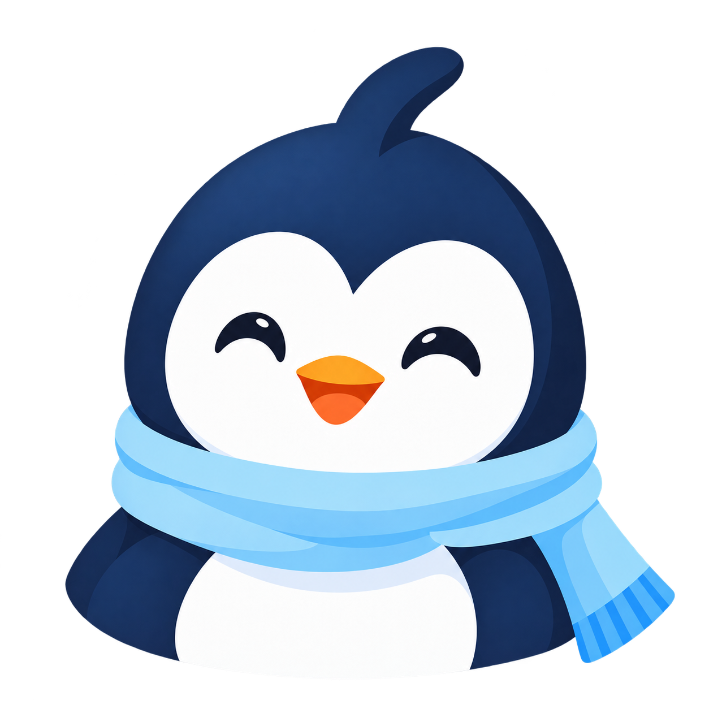
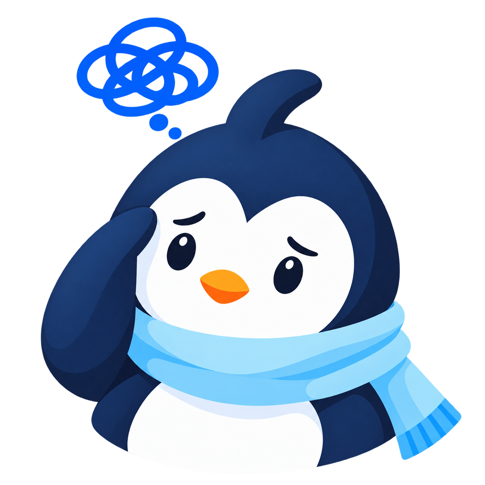

The moment. You replay a hard conversation and still don't know what you should have said. Students told us this in our Miro sessions more than anything else.
The promise. A private place to write it down, tag how it felt, and find your own words for next time. Nothing is uploaded.
The name. Circle for the people around you, U for you at the centre and for university.
The character. Warm, clear, composed. Companionship without cheerleading: Pingu never celebrates a bad day.
Mark: Pingu's face in ink and white, readable at 24 px, on white, ice or sky. Wordmark: Plus Jakarta Sans ExtraBold, ink. Always mark then word.




One face, many moments. The same eyes, beak and scarf in every portrait, scene and icon, so a tiny tag and a full scene read as one character.